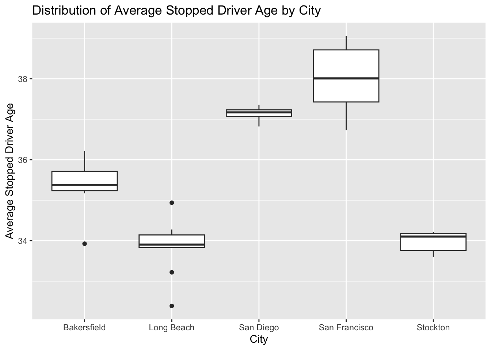
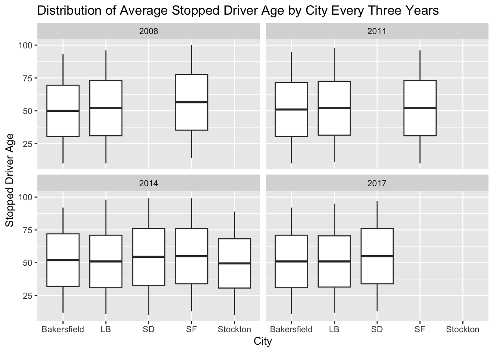

Show the code
library(DBI)
con_traffic <- DBI::dbConnect(
RMariaDB::MariaDB(),
dbname = "traffic",
host = Sys.getenv("TRAFFIC_HOST"),
user = Sys.getenv("TRAFFIC_USER"),
password = Sys.getenv("TRAFFIC_PWD")
)Stopped Driver Age Comparison by City
Emmie Appl
April 30, 2025
The Stanford Open Policing Project, published in 2020, is a compilation of data acquired through millions of traffic stops made by law enforcement agencies across 42 different US states. Some of the data from these stops include records of the driver’s age. I wanted to compare the average age of stopped drivers across different California cities, as well as how this metric changed over time. To this end, I analyzed the data for all California cities included in the Open Policing Project that recorded driver age, calculating the average age of stopped drivers in each city for each year.
SELECT "San Francisco" as city,
YEAR(date) AS stop_year,
AVG(subject_age) AS avg_age
FROM ca_san_francisco_2020_04_01
WHERE subject_age IS NOT NULL
AND date IS NOT NULL
GROUP BY YEAR(date)
UNION
SELECT "Bakersfield" as city,
YEAR(date) AS stop_year,
AVG(subject_age) AS avg_age
FROM ca_bakersfield_2020_04_01
WHERE subject_age IS NOT NULL
AND date IS NOT NULL
GROUP BY YEAR(date)
UNION
SELECT "Long Beach" as city,
YEAR(date) AS stop_year,
AVG(subject_age) AS avg_age
FROM ca_long_beach_2020_04_01
WHERE subject_age IS NOT NULL
AND date IS NOT NULL
GROUP BY YEAR(date)
UNION
SELECT "San Diego" as city,
YEAR(date) AS stop_year,
AVG(subject_age) AS avg_age
FROM ca_san_diego_2020_04_01
WHERE subject_age IS NOT NULL
AND date IS NOT NULL
GROUP BY YEAR(date)
UNION
SELECT "Stockton" as city,
YEAR(date) AS stop_year,
AVG(subject_age) AS avg_age
FROM ca_stockton_2020_04_01
WHERE subject_age IS NOT NULL
AND date IS NOT NULL
GROUP BY YEAR(date)
ORDER BY city, stop_year;
This plot is a box plot comparing the average stopped driver ages between California cities across all years from which data is available. The x-axis represents the 5 different cities (L to R: Bakersfield, Long Beach, San Diego, San Francisco, Stockton) and the y-axis shows the average driver age for each city. In each box, the vertical spread represents the variation in the average stopped driver age across different years. The middle line of each box marks the median average age, and the box boundaries represent the interquartile range. Individual points represent the average stopped driver age from a singular year. San Francisco had the highest average stopped driver age, followed by San Diego and then Bakersfield. Long Beach and Stockton had the lowest average stopped driver ages.

This plot is a line plot tracking the average stopped driver age each year in each of the 5 cities. The x-axis represents the year that the stop was made and the y-axis shows the average age of drivers stopped in that year. Each line represents a different city and connects the yearly averages to illustrate trends in driver age over time. The average age of stopped drivers in San Francisco increased by about 2 years between 2007 and 2016 in a roughly linear fashion. Bakersfield saw a steady increase of about 2 years between 2008 and 2010, then a drop to an average age of about 35.5 years that remained consistent until the last data point from 2018. The average stopped driver age in Long Beach also rose by approximately 2 years between 2008 and 2010, remaining stable until 2016 when there was about a 1 year jump in the 2017 data. Although the data for Stockton and San Diego only cover 4 and 3 years, respectively, the average stopped driver age is relatively stable.
Conclusions
Together, these two plots compare the average age of stopped drivers between California cities, as well as how that number has changed over time. Comparing the average age of stopped drivers to the average age of all drivers in these cities will lead to understanding whether certain age ranges are more prone to being stopped by law enforcement, or whether these ages simply reflect the average age of the driver population in that city. Seeing how the average stopped driver ages change over time compared to changes in the average driver population age, as well as the average general population age, will reveal whether the changes in average stopped driver age are due to changes in city demographics, or if there may be other underlying reasons for these changes.
References
Pierson, Emma, Camelia Simoiu, Jan Overgoor, Sam Corbett-Davies, Daniel Jenson, Amy Shoemaker, Vignesh Ramachandran, et al. 2020. “A Large-Scale Analysis of Racial Disparities in Police Stops Across the United States.” Nature Human Behaviour, 1–10.